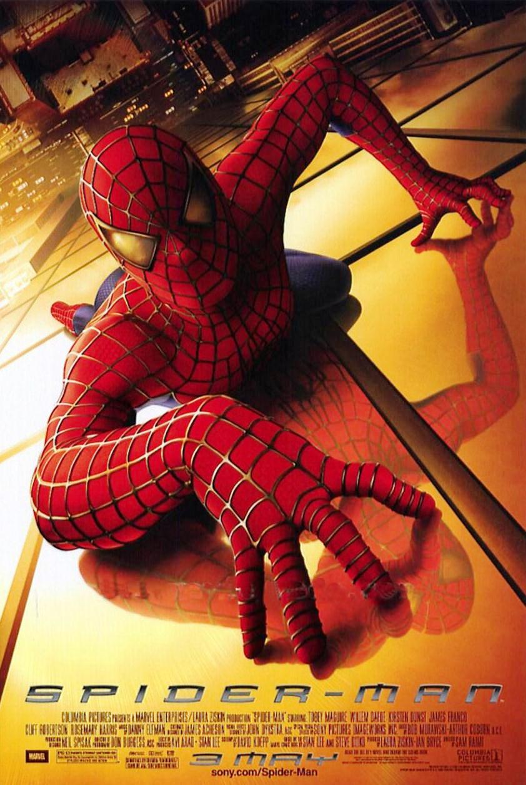
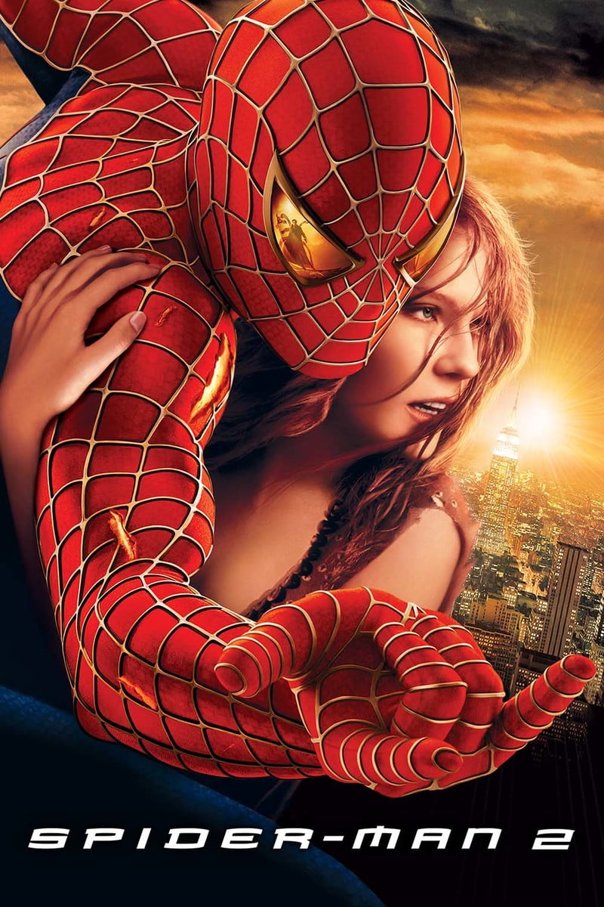
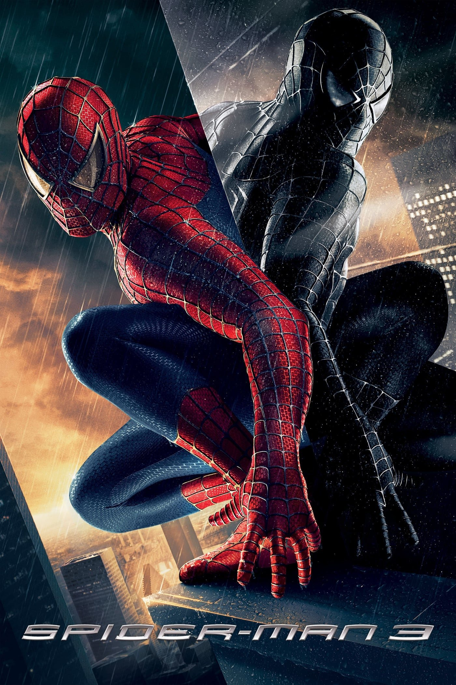
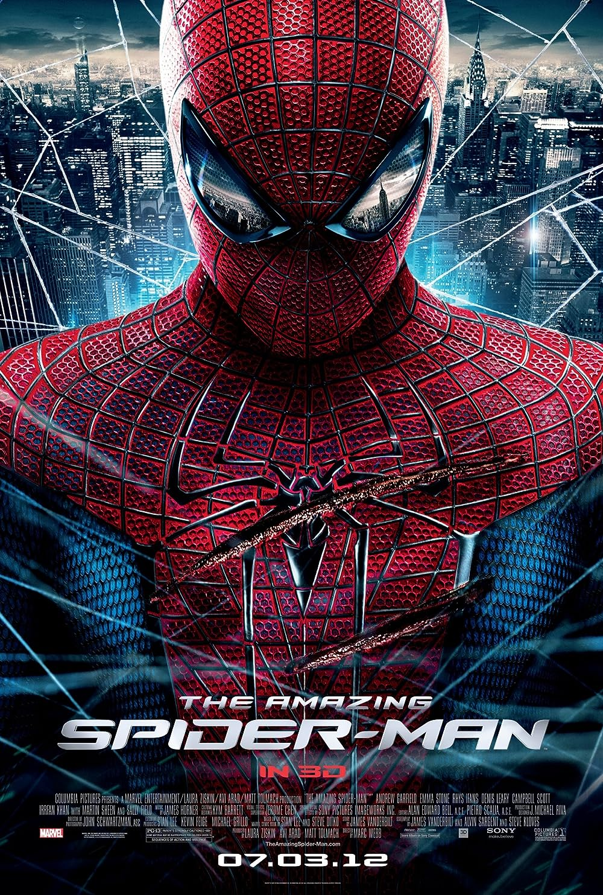
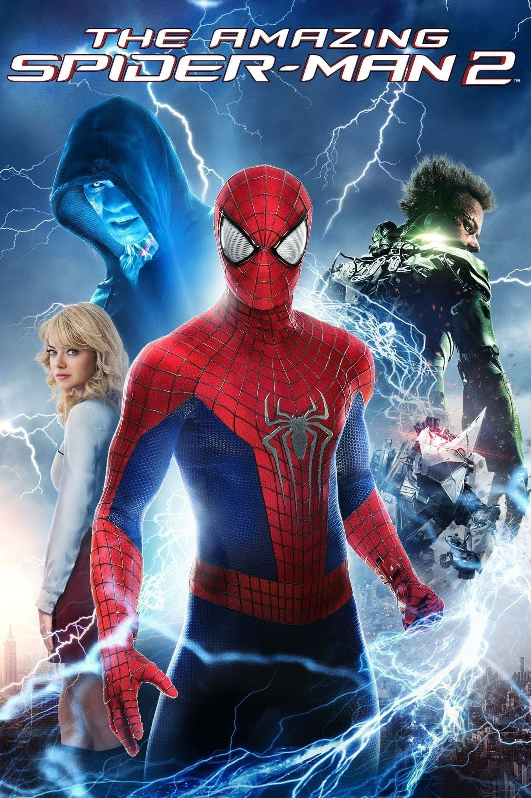
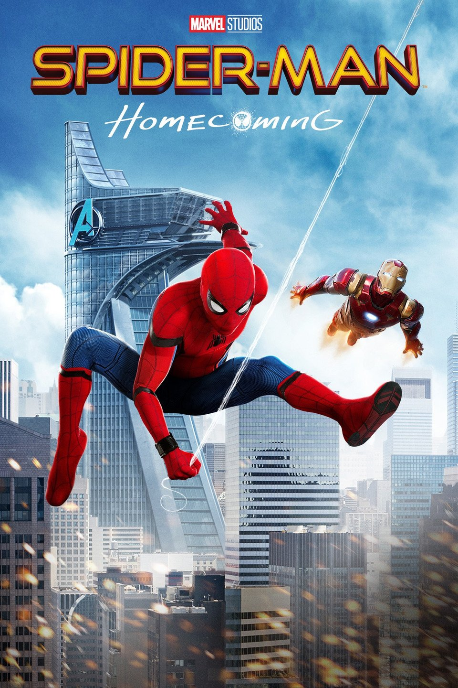
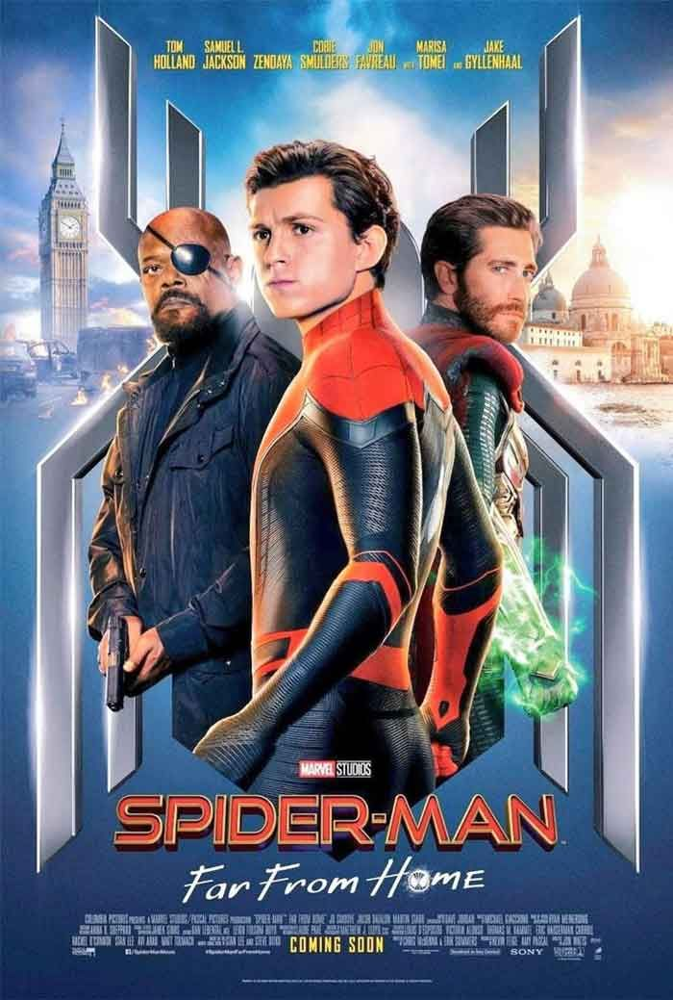
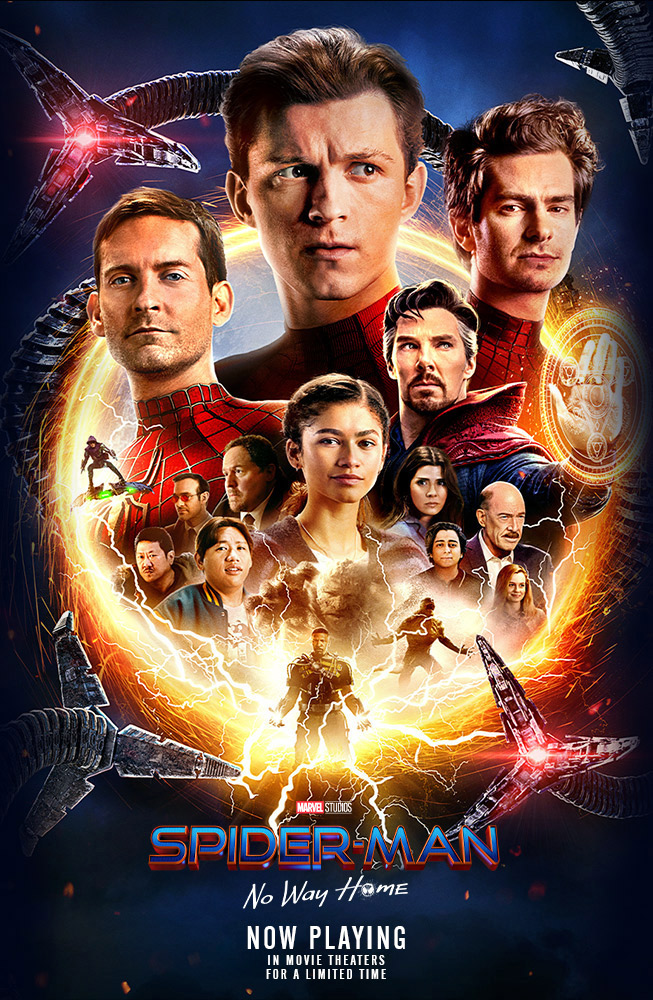
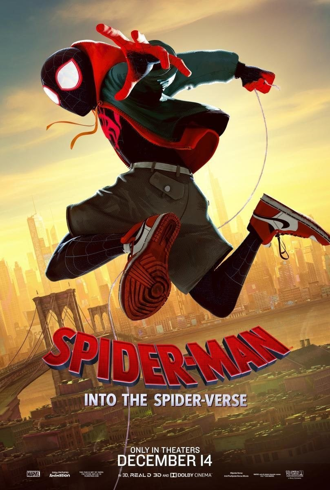
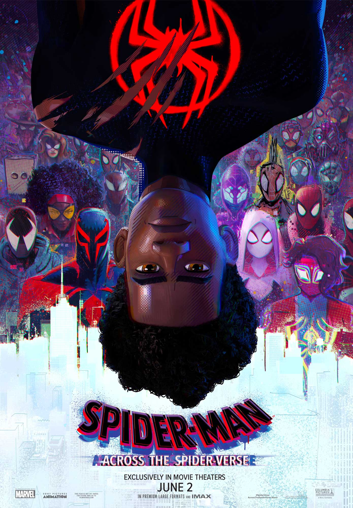

Em Homem-Aranha 2, após derrotar o Duende Verde, a vida de Peter Parker (Tobey Maguire) muda por completo. Temendo que Mary Jane (Kirsten Dunst) sofra algum risco por ser ele o Homem-Aranha, Peter continua escondendo o amor que sente e se mantém longe dela. Ao mesmo tempo precisa lidar com Harry (James Franco), seu melhor amigo, cuja raiva pelo Homem-Aranha aumenta cada vez mais por considerá-lo como sendo o assassino de seu pai. Além disso sua tia May (Rosemary Harris) passa por uma fase difícil após a morte de seu tio Ben, estranhando também o comportamento do sobrinho. Enquanto precisa lidar com seus problemas particulares Peter recebe ainda uma má notícia: o surgimento do Dr. Octopus (Alfred Molina), um homem que possui tentáculos presos ao corpo.

Em Homem-Aranha 2, após derrotar o Duende Verde, a vida de Peter Parker (Tobey Maguire) muda por completo. Temendo que Mary Jane (Kirsten Dunst) sofra algum risco por ser ele o Homem-Aranha, Peter continua escondendo o amor que sente e se mantém longe dela. Ao mesmo tempo precisa lidar com Harry (James Franco), seu melhor amigo, cuja raiva pelo Homem-Aranha aumenta cada vez mais por considerá-lo como sendo o assassino de seu pai. Além disso sua tia May (Rosemary Harris) passa por uma fase difícil após a morte de seu tio Ben, estranhando também o comportamento do sobrinho. Enquanto precisa lidar com seus problemas particulares Peter recebe ainda uma má notícia: o surgimento do Dr. Octopus (Alfred Molina), um homem que possui tentáculos presos ao corpo.

Peter Parker (Tobey Maguire) conseguiu encontrar um meio-termo entre seus deveres como o Homem-Aranha e seu relacionamento com Mary Jane (Kirsten Dunst). Porém o sucesso como herói e a bajulação dos fãs, entre eles Gwen Stacy (Bryce Dallas Howard), faz com que Peter se torne auto-confiante demais e passe a negligenciar as pessoas que se importam com ele. Porém a situação muda quando ele precisa enfrentar Flint Marko (Thomas Haden Church), mais conhecido como o Homem-Areia, que possui ligações com a morte do seu tio Ben. Tendo que lidar com o sentimento de vingança, Peter passa a usar um estranho uniforme negro, que se adapta ao seu corpo.

Em O Espetacular Homem-Aranha, Peter Parker (Andrew Garfield) é um rapaz tímido e estudioso, que inicou há pouco tempo um namoro com a bela Gwen Stacy (Emma Stone), sua colega de colégio. Ele vive com os tios, May (Sally Field) e Ben (Martin Sheen), desde que foi deixado pelos pais, Richard (Campbell Scott) e Mary (Embeth Davidtz). Certo dia, o jovem encontra uma misteriosa maleta que pertenceu a seu pai. O artefato faz com que visite o laboratório do dr. Curt Connors (Rhys Ifans) na Oscorp. Parker está em busca de respostas sobre o que aconteceu com os pais, só que acaba entrando em rota de colisão com o perigoso alter-ego de Connors, o vilão Lagarto.

Em O Espetacular Homem-Aranha 2, Peter Parker (Andrew Garfield) adora ser o Homem-Aranha, por mais que ser o herói aracnídeo o coloque em situações bem complicadas, especialmente com sua namorada Gwen Stacy (Emma Stone) e sua tia May (Sally Field). Apesar disto, ele equilibra suas várias facetas da forma que pode. No momento, Peter está mais preocupado é com o fantasma da promessa feita ao pai de Gwen, de que se afastaria dela para protegê-la. Ao mesmo tempo ele precisa lidar com o retorno de um velho amigo, Harry Osborn (Dane DeHaan), e o surgimento de um vilão poderoso: Electro (Jamie Foxx).

Em Homem-Aranha: De Volta ao Lar, depois de atuar ao lado dos Vingadores, chegou a hora de Peter Parker (Tom Holland) voltar para casa e para a sua vida, já não mais tão normal. Lutando diariamente contra pequenos crimes nas redondezas, ele pensa ter encontrado a missão de sua vida quando o terrível vilão Abutre (Michael Keaton) surge amedrontando a cidade. O problema é que a tarefa não será tão fácil como ele imaginava.

Em Homem-Aranha: Longe de Casa, Peter Parker (Tom Holland) está em uma viagem de duas semanas pela Europa, ao lado de seus amigos de colégio, quando é surpreendido pela visita de Nick Fury (Samuel L. Jackson). Precisando de ajuda para enfrentar monstros nomeados como Elementais, Fury o convoca para lutar ao lado de Mysterio (Jake Gyllenhaal), um novo herói que afirma ter vindo de uma Terra paralela. Além da nova ameaça, Peter precisa lidar com a lacuna deixada por Tony Stark, que deixou para si seu óculos pessoal, com acesso a um sistema de inteligência artificial associado à Stark Industries.

Em Homem-Aranha: Sem Volta para Casa, Peter Parker (Tom Holland) precisará lidar com as consequências da sua identidade como o herói mais querido do mundo após ter sido revelada pela reportagem do Clarim Diário, com uma gravação feita por Mysterio (Jake Gyllenhaal) no filme anterior. Incapaz de separar sua vida normal das aventuras de ser um super-herói, além de ter sua reputação arruinada por acharem que foi ele quem matou Mysterio e pondo em risco seus entes mais queridos, Parker pede ao Doutor Estranho (Benedict Cumberbatch) para que todos esqueçam sua verdadeira identidade. Entretanto, o feitiço não sai como planejado e a situação torna-se ainda mais perigosa quando vilões de outras versões de Homem-Aranha de outro universos acabam indo para seu mundo. Agora, Peter não só deter vilões de suas outras versões e fazer com que eles voltem para seu universo original, mas também aprender que, com grandes poderes vem grandes responsabilidades.

Em Homem-Aranha no Aranhaverso, Miles Morales é um jovem negro do Brooklyn que se tornou o Homem-Aranha inspirado no legado de Peter Parker, já falecido. Entretanto, ao visitar o túmulo de seu ídolo em uma noite chuvosa, ele é surpreendido com a presença do próprio Peter, vestindo o traje do herói aracnídeo sob um sobretudo. A surpresa fica ainda maior quando Miles descobre que ele veio de uma dimensão paralela, assim como outras versões do Homem-Aranha.

Homem-Aranha: Através do Aranhaverso, é a continuação do vencedor do Oscar Homem-Aranha: No Aranhaverso, de 2018, que acompanha Miles Morales (Shameik Moore), o simpático Homem-Aranha do Brooklyn. Neste novo capítulo, Miles está de volta para uma nova missão em sua agitada vida como super herói. No novo filme, Morales é transportado para uma aventura épica através do multiverso, e deve unir forças com a mulher-aranha Gwen Stacy (Hailee Steinfeld) e um novo time de Pessoas-Aranha, formado por heróis de diversas dimensões. No entanto, tudo muda quando os heróis entram em conflito sobre como lidar com uma nova ameaça, e Miles se vê em um impasse. E para piorar ainda mais a situação, eles precisam enfrentar um vilão muito mais poderoso do que qualquer coisa que já tenham encontrado antes. Agora, para salvar as pessoas que ele mais ama no mundo, Miles deve redefinir o que significa ser um super herói.
| Desenvolvido por Lucas Lins |
|---|